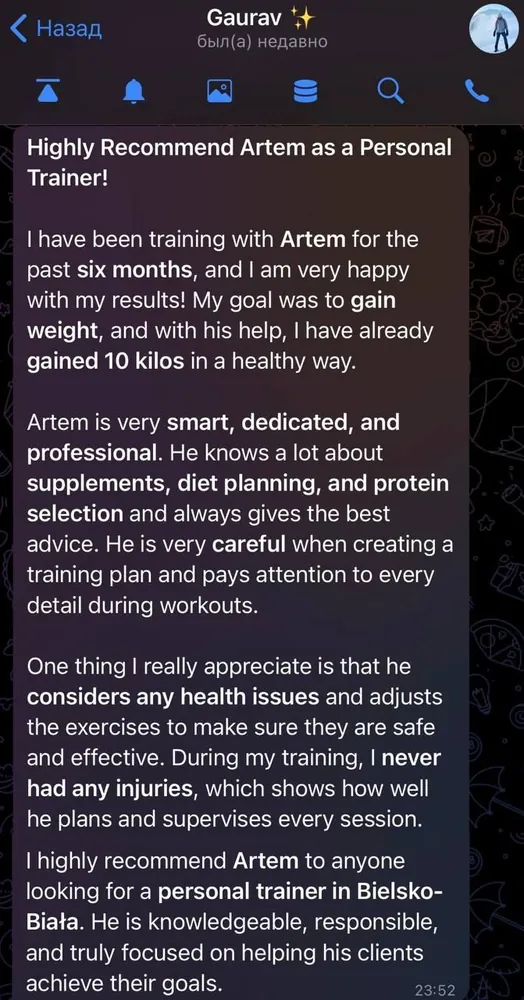

+10 КГ КАЧЕСТВЕННОЙ МАССЫ ЗА 6 МЕСЯЦЕВ
С чем пришёл
Гаурав вернулся в зал после долгого перерыва. Опыт тренировок у него уже был, но раньше нормального результата добиться так и не получилось.
- межпозвоночная грыжа в пояснице — сильные боли, иногда трудно было даже двигаться;
- спина в целом побаливала постоянно;
- желудок капризный, многое спортивное питание просто не заходило;
- вегетарианец, без мяса и яиц.
Хотел одного — набрать мышечную массу, укрепить спину и перестать её чувствовать каждый день.
Что делали
Собрали программу из трёх тренировок в неделю и подстроили нагрузку так, чтобы спина успевала восстанавливаться, а прогресс всё равно шёл. С питанием не стали считать калории — просто разобрали, что и сколько есть, чтобы было понятно и без напряга.
Подобрали добавки, которые он нормально переносил, чтобы закрывать белок и энергию. Плюс добавили упражнения на кор и стабилизацию поясницы.
Через 6 месяцев
- +10 кг массы, и жир почти не подрос;
- тело в целом стало ощутимо крепче;
- боли в спине практически ушли;
- спина больше не мешает ни в жизни, ни на тренировках;
- появились привычки, которые держатся сами по себе — и в питании, и в движении.
Мы уже больше полутора лет работаем вместе. Когда основная цель была закрыта, перешли в режим поддержания формы и хорошего самочувствия.